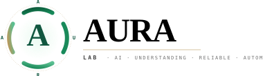

A research group at William & Mary's Department of Computer Science studying how language models for software engineering can be made smaller, more interpretable, and more honestly evaluated.
Resource-efficient foundation models for code. Neurosymbolic reasoning and interpretability. Causal, honest evaluation. Multi-step automation that practitioners can trust.
Quantization · distillation · PEFT — evaluated against latency, energy, and accuracy jointly.
Pairing neural models with grammars, type systems, and program analysis to produce explanations developers can audit.
Counterfactuals, robustness, and rigorous LLM-as-a-Judge methodology that measures what matters.
Multi-step agents that plan, act, and report — across issue triage, code review, and patch synthesis.
5 active projects + 1 in planning. NSF CRII, LLM-as-Judge, Neurosymbolic, Onboarding Kit, Multi-Agent SE. Each with team, timeline, deliverables, full funding ledger.
Filter by tag, search by title or author. Current year expanded by default; older years collapsed. DOI + artefact + support badges per paper.
PI as a featured card with full credentials; each PhD as a rich card with focus area, joined date, prior degrees. Collaborator network and hiring CTA.
Active + settled + community-submitted forecasts. Calibration plot with read-out. Brier scale with worked examples. 6-rule protocol. FAQ. Version timeline.
312 stars across the lab and PI orgs. MIT-licensed. Pinned artefacts with language tags, contribution policy, open-by-default commitments.
Email Antonio directly. Read the public onboarding kit first to know what a first year looks like. Undergraduate research at W&M also welcome year-round.
Two PhD slots for Fall 2026, plus undergraduate research opportunities at W&M. Strong programming, a taste for empirical work, and curiosity about why a model behaves the way it does.